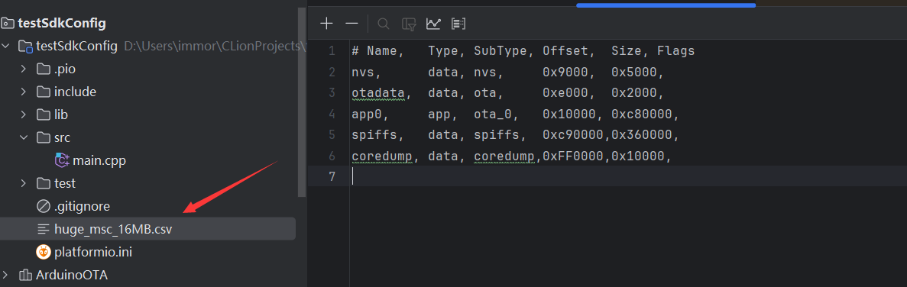
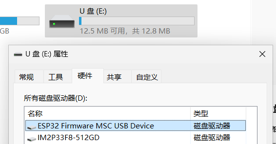

分区表
可以参考esp-idf对分区表的介绍，自定义分区表，或者使用arduino 框架里面预置的分区表。
本篇出现的用户目录这是当前操作系统用户的主文件夹，在windows中一般在 C:\Users\对应用户名文件夹
Linux中 除root外在/home/用户名文件夹
分区表配置项
在以下目录 用户目录/.platformio/platforms/espressif32/boards 中的json文件里面，部分JSON含arduino下特有配置如下:
{
"build": {
"arduino": {
"ldscript": "esp32s3_out.ld",
"partitions": "default_8MB.csv"
}
}
}
我们可以通过 board_build.partitions 项重新指定分区表。
预置分区表
在使用arduino ide时，菜单中的是预置分区表。 我们可以在以下位置找到
使用示例： 一个更大的U盘，我们使用esp32 s3 dev kit c时默认是8M flash配置，因此分区也是8M的配置。 如果使用了N16的模组，我们可以修改flash和分区配置将剩余空间利用上。
[env:esp32-s3-devkitc-1]
platform = espressif32
board = esp32-s3-devkitc-1
framework = arduino
monitor_speed = 115200
upload_speed = 921600
monitor_filters =
direct
esp32_exception_decoder
# 使用预置的 16MB的分区表配置
board_build.arduino.partitions = default_16MB.csv
# 更换分区表时，一并修改flash大小
board_upload.flash_size = 16MB
board_build.arduino.memory_type = qio_opi
board_build.extra_flags =
# U盘需要 USB默认为OTG
-D ARDUINO_USB_MODE=0
build_flags =
-D BOARD_HAS_PSRAM
-D CORE_DEBUG_LEVEL=ARDUHAL_LOG_LEVEL_INFO
-D CONFIG_ARDUHAL_LOG_COLORS=1
# MSC
-D ARDUINO_USB_MSC_ON_BOOT=1
主程序并不需要做什么，USB MSC在启动的时候自动运行，这里写个简单代码，减少开销。
#include <Arduino.h>
void setup() {
}
void loop() {
log_i("flash size:%u", ESP.getFlashChipSize());
delay(10 * 1000); // 减少占用
}
注意
烧录该例程会将USB变得不可烧录，可以使用串口烧录,然后把USB接到电脑，即可以U盘方式查看。 如果需要恢复USB CDC使用，可以使用串口烧录一个空程序，其中配置将USB CDC打开。
自定义分区表
参考IDF中esp32分区表
我们可以自己定义我们的esp32的分区表，以下就是在预置的default_16MB.csv分区表的基础上，将app1去掉了，将其空间合并到app0中，除了固件占用以外剩余区域均可以作为U盘使用。
# Name, Type, SubType, Offset, Size, Flags
nvs, data, nvs, 0x9000, 0x5000,
otadata, data, ota, 0xe000, 0x2000,
app0, app, ota_0, 0x10000, 0xc80000,
spiffs, data, spiffs, 0xc90000,0x360000,
coredump, data, coredump,0xFF0000,0x10000,
我将其取名为huge_msc_16MB.csv 放到项目目录下。
在配置中指定它 board_build.arduino.partitions = huge_msc_16MB.csv
总体配置如下:
[env:esp32-s3-devkitc-1]
platform = espressif32
board = esp32-s3-devkitc-1
framework = arduino
monitor_speed = 115200
upload_speed = 921600
monitor_filters =
direct
esp32_exception_decoder
board_build.arduino.partitions = huge_msc_16MB.csv
board_upload.flash_size = 16MB
board_build.extra_flags =
-D ARDUINO_USB_MODE=0
build_flags =
-D CORE_DEBUG_LEVEL=ARDUHAL_LOG_LEVEL_INFO
-D CONFIG_ARDUHAL_LOG_COLORS=1
-D ARDUINO_USB_MSC_ON_BOOT=1
这样可以得到一个12M的U盘
Last modified: 08 十月 2024